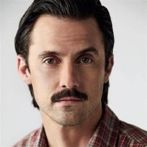

Jack Pearson

Jack Pearson, interpretado por Milo Ventimiglia, era la cabeza de la familia. Era el esposo de Rebecca y padre de Kevin, Kate y Randall.
Jack tuvo una infancia difícil. Su padre, con el que no tuvo una buena relación, era alcohólico y violento. Fue a la guerra de Vietnam junto con su hermano Nicky. Luego de esta experiencia trabajó como obrero y su sueño era tener su propia compañía constructora, pero prefirió tener un trabajo estable para mantener su hogar. Se caracterizaba por ser un hombre dedicado a su familia, considerado como el esposo y padre ideal, pero sus vivencias, principalmente su adicción al alcohol, mostraron su lado más vulnerable y sensible.